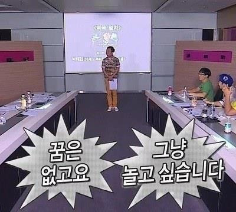
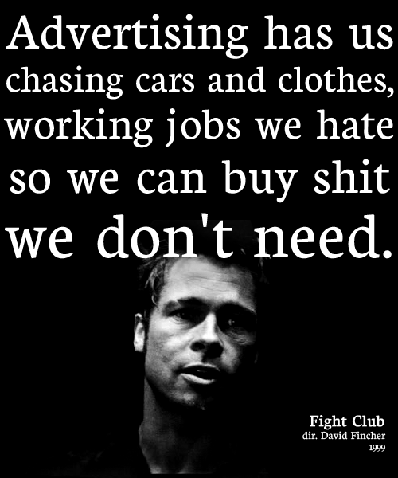

은퇴와 일, 꿈과 저축에 대한 잡상
게시: 2021-01-21T06:30:02+09:00
아직 고등학생이거나 또는 이제 막 대학에 진학하게 될 고교 졸업생들은 어떤 전공을 가질지 선택을 해야 하는데, 그것이 자신의 인생을 설계하는 사실상 첫 과정입니다. 그런데 이제 19살 된 고교 졸업생에게 확고한 꿈이 있기를 기대하는 것은 좀 어려운 일입니다. 저처럼 이제 50이 넘은 사람을 포함해서, 대부분의 성인들도 자기가 인생에서 이루고 싶은 바가 뭔지 잘 모르고 사는데 말입니다.

(지금 봐도 명짤입니다. 솔직히 대부분의 사람들이 이러지 않나요?) 제가 저희 아이나 친척 아이들에게 항상 하는 이야기가 있습니다. '예전에도 그랬고 지금은 그런 경향이 더 강한데, 취업하려면 공대를 가는 것이 좋다. 단, 공대를 가면 취업은 되는데 맘에 안 드는 곳에 취업이 되더라.' 이건 일반적인 이야기는 아니고 순수하게 제 개인적인 경험에서 나온 지엽적인 이야기일 뿐입니다. 저는 고교때부터 수학을 못했고 반면에 역사책 읽는 거 좋아해서 누가 봐도 문과 타입의 학생이었습니다만, 그때에도 '취직하려면 공대 가야 한다더라' 면서 이과를 갔고 정말 공대를 갔습니다. 그러나 정작 평생 다닌 직장에서는 대학 전공과는 별 상관없는 직종의 엔지니어 일을 했어요. 그렇게 꿈을 쫓아가지 않고 취업을 고려해서 전공을 정하다보니 그렇게 되었습니다. 저는 꿈이 명확하거나 간절하지는 않았습니다만, 그래도 굳이 말하라면 역사학을 공부해서 재미난 역사 풀이책 같은 것을 써보고 싶었어요. 그러나 어린 제가 생각해봐도 그런 거 하다가는 (어디 대학 교수가 되기 전에는) 굶기 딱 좋겠더라고요. 생각해보면 뭔가 이미 길이 정해진 쪽으로면 생각할 것이 아니라, 아직 길이 없다면 스스로 만들 생각을 했다면 좋았을텐데 저는 그런 재주는 없었습니다. 최근 설민석 강사 논란이 있었습니다만, 저는 그 양반 나쁘게 보지 않습니다. 어쨌거나 제가 못 이룬 꿈을 이루신 분인걸요. 비록 과욕이 있긴 했지만 전혀 존재하지 않던 시장을 거의 혼자 힘으로 일구어낸 것은 대단한 업적이라고 저는 생각합니다.
(저는 개인적으로 이 양반 강의를 본 적은 없지만, 이 분이 우리 역사에 대한 관심을 일반 대중에게 고양시킨 점을 생각하면 고고하신 정통 역사학자 100명보다 이 양반의 공로가 더 크다고 생각합니다. 잘못이 있다면 그건 그것대로 욕을 먹을 일이긴 하지요.)
모든 사람들이 다 강렬한 꿈을 가지고 사는 것은 아닙니다. 꿈이 없는 사람은, 또 꿈이 있어도 재능이나 환경 등이 받쳐주지 못해서 도저히 그 꿈을 좇을 처지가 아닌 사람들은 찌질한 패배자일까요? 저는 꼭 그렇게 생각하지는 않습니다. '꿈이 정말로 간절하다면 뭐든지 이룰 수 있다' 라는 말을 흔히 합니다. 그리고 워낙 흔한 말인 만큼 거기에 대한 회의와 반발도 강합니다. 저는 어느 쪽인가 하면 그 말에 찬성하는 편입니다. 가령 공부는 싫지만 축구가 너무 좋아서 축구 선수가 되는 것이 꿈이라는 평범한 고등학생이 있다고 생각해보지요. 제가 알기로는 EPL이나 프리메라 리가 같은 곳이 아니라 그냥 우리나라 프로리그의 축구 선수가 되는 것이, 서울대 의대에 들어가는 것보다 훨씬 더 어려운 일입니다. 그러면 그 학생은 축구 선수의 꿈을 포기해야 할까요? 저는 꼭 그렇게 보지는 않습니다. 축구가 너무 좋아서 그런 꿈을 가지는 것이라면, 동네 조기 축구회에서 그 꿈을 이룰 수도 있습니다. 물론 조기 축구회로 먹고 살 수는 없습니다. 그러니 생계를 위해서는 공장 직원이든 택시 운전이든 뭔가 직업을 가져야 합니다. 하지만 매일 아침, 또는 주말 아침에 동네 학교 운동장에서 분명히 꿈을 이룰 수는 있습니다. '내가 말하는 꿈이라는 것이 그런 것이 아니다'라고 말한다면, 그 꿈이 무엇인지 분명히 정의할 필요가 있습니다. 혹시 EPL 스타 선수처럼 명성과 부를 거머쥐길 바라는 것이라면, 그건 축구가 좋은 것이 아니라 명성과 부가 좋은 것 아닌지 생각해봐야 한다는 것이지요. 저는 까마득한 옛날에 존 그리셤 소설 어느 편에서인가 이제 막 법대를 졸업한 젊은 변호사가 'retire early'가 꿈이라서 검소하게 살며 저축을 열심히 하는 장면을 읽고나서는 조기 은퇴가 꿈이 되었습니다. 좀더 정확하게 말하자면 은퇴가 꿈이 아니라 생계를 유지하기 위한 경제활동을 빨리 졸업하고, 그 이후에는 돈에 연연하지 않고 정말 중고등학교 시절 꿈꾸던대로 (책이 나오든 말든, 무협지가 되었든 이야기 역사책이 되었든) 역사쪽 일을 해보자는 것이었습니다. 그래서 저는 FIRE (Financial Independence Retire Early) 커뮤니티에 관심이 많았고, 나름대로 검소한 생활을 했습니다. 원래 희망은 40대 중반이 넘기 전에 은퇴를 한다는 것이었지만, 결국 50이 넘어서까지 아직은 회사를 다니고 있습니다. 제가 아무리 절약을 해도 소득이 뭐 그렇게 많지도 않고, 또 FIRE 관련 기사를 읽으면 읽을 수록 경제 활동에서 은퇴한다는 것이 꽤 무서운 일이더라고요. 절대적으로 필요한 돈도 적지 않긴 하지만, 무엇보다 '얼마나 모아야 확실히 늙그막에 고생을 하지 않을 것인가'라는 점이 매우 불명확합니다. 특히 그건 격변하는 세계 속에서 앞으로 뭐가 어떻게 될지 모른다는 불안감 때문에 점점 더 해지고 있지요. 참고로 말씀드리면 제가 가장 그럴싸하게 생각하는 것은 (건강보험 등의 세금 포함해서) 평소 생활비의 25년치를 모아두었다면 은퇴해도 된다는 썰입니다만, 그것에 대해서도 맞다 틀리다 말이 많습니다. 오늘 굳이 이렇게 제 개인적인 이야기를 하는 이유는 최근에 Medium에 실린 아래 글을 읽고 나와 생각이 비슷한 사람이 있구나 싶어서 반가웠기 때문입니다.
The Purpose of Your Life Is to Retire — and Go Straight Back to Work
The amount of money you get paid for your work is a huge distraction.
medium.com
윗글을 요약하면, 생계를 위한 일에서는 빨리 은퇴하고, 그 이후에는 돈에 구애받지 않고 정말로 하고 싶었던 일을 해보라는 것입니다. 짧으니 한번씩 읽어들 보시길 바래요. 그러나 책임있는 성인이라면 가족의 경제 생활을 결코 무시해서는 안됩니다. 고갱처럼 가족을 버리고 그림을 그리러 떠나버린 사람도 있습니다만, 대부분의 사람들에게는 자신의 꿈보다는 자신의 가족이 더 소중한 법입니다. 따라서 꿈이 간절할 수록 FIRE가 중요합니다. 결국 꿈 이야기로 시작해서 FIRE, 그러니까 돈 이야기로 끝을 맺네요. 에드워드 노튼과 브레드 피트가 주연한 'Fight Club'이라는 1999년 미국 영화가 있습니다. 여기서의 명짤이 바로 FIRE 활동의 핵심이라고 봐요. 비싼 차와 근사한 옷은 여러분을 자유로부터 멀어지게 하는 것들이자, 브레드 피트의 말처럼 shit we don't need에 불과합니다. 아껴서 저축하세요. 주식하시려면 ETF 같은 것을 적금 붓듯이 적립식으로 하시는 것을 추천드립니다.

("광고는 우리에게 자동차와 옷을 갈망하게 만들고, 우리가 하기 싫어하는 일을 하게 만들지. 그래서 우리가 필요하지도 않은 X같은 것을 사게 만드려는 거야.")